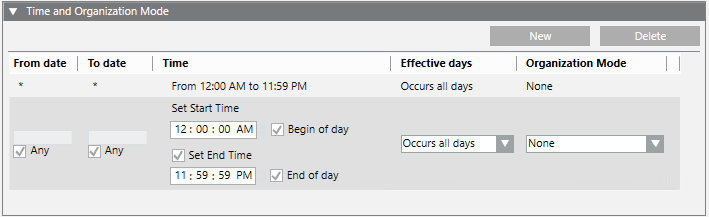

Time and Organization Mode
The Time and Organization Mode expander lets you specify one or more time-dependent conditions (date ranges, time intervals, days of the week, and so on) for triggering the incident template you are configuring.

Each condition occupies one row and at least one row must be true (OR logic between rows) to assert the time and organization mode trigger/filter:
- To add a new row, click New.
- To remove a row, select it and click Delete.
Within each row, you define what criteria will make that row true. All the criteria you specify on a row must be met for that row to be true (AND logic between columns):
- From date/To date
- Time
- Effective days
- Organization mode
From Date/To Date
Allows you to specify a date range by entering a start and end date. Selecting the Any check box disables date selection. If you set:
- From date = Any: then any date before the specified To date is valid.
- To date = Any: then any date after the specified From date is valid.
- Both From date and To date = Any: then any date is valid.
A date is considered valid only if the weekday it falls on is also selected in the Effective Days column. The system will not accept a row with From date later than To date.
From date is automatically set to the current date in the following situations:
- When you select Monthly from the Recurrence drop-down list of Effective Days, and set any combination of values for this type of recurrence.
- When you select Weekly from the Recurrence drop-down list of Effective Days, and configure Every with a value greater than 1 (one week).
Time
To set a specific time of day, enter a value in Set Start Time and deselect Set End Time.
To set a time range, enter values for both Set Start Time and Set End Time.
Select Begin of day to set the start time to midnight (24-hour clock: 00:00:00;12-hour clock: 12:00:00AM). Set Start Time selection becomes unavailable.
Select End of day to set the end time to one second to midnight(24-hour clock: 23:59:59; 12-hour clock:11:59:59PM). Set End Time selection becomes unavailable.
To make any time of day valid, select both Begin of day and End of day.
The way the time displays (24-hour clock or 12-hour clock) depends on the language set for the user in the User Settings expander in the Users application.
Effective Days
Here you can specify Weekly or Monthly recurrence patterns. You can:
Specify individual days of the week, the entire week (All), work week from Monday to Friday (WW), or weekends (WE) Saturday and Sunday, and the recurrence of this pattern (for example, once a week or every two weeks, and so on).
Specify certain dates in the month (such as the first or the 14th day of the month) and the recurrence of this pattern (for example, the first day of the month every 3 months, or the last Monday of the month every 6 months).
An error message displays in case of invalid configuration with days or months not selected. The system will not accept a row with no effective days.
Organization Mode
Organization modes are labels that can be configured or dynamically toggled to reflect the operational status or schedule of the building control site.
You can use the different organization modes for triggering incident template. You can select from one of the following predefined organization modes:
- Day/Night
- Open/Closed
- On/Off
- Operational Status (in operation, in maintenance)
- Occupied/Unoccupied
You can also select multiple organization modes from the list (for example, Night and Unoccupied). In this case they will be combined with an OR logic (only one of them needs to be true, to make the Organization Mode column true).
If necessary, new organization modes can be created for specific needs or organization modes can be automated.